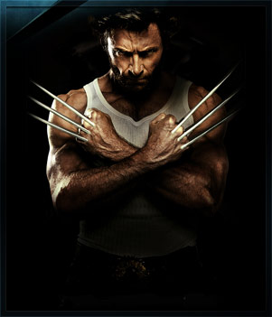

Բարի Գալուստ իմ առաջին էջ
+37498941429
+37491111294
Люди Икс: Начало. Росомаха (2009)
История великого героя из мира мутантов начинается в 1845 году. Джеймс Хоулетт со своим сводным братом Виктором Кридом еще в детстве обнаружили, что обладают сверхъестественными способностями. После того, как Джеймс в состоянии аффекта убил отца, братья сбежали из дома и долгое время путешествовали вместе. Они пережили несколько войн и всегда поддерживали друг друга, пока не грянула Вьетнамская война. После того, как один из офицеров погиб во время военной операции, Джеймса и Виктора приговорили к расстрелу и казнили.
Способности братьев к регенерации спасли их обоих, и какое-то время они провели в заключении. О них узнал Уильям Страйкер – полковник, собирающий команду мутантов, чтобы с их помощью разыскать обломки таинственного метеорита, упавшего на землю в Нигерии. Очень быстро Джеймс отошел от дел, поскольку ему не нравились методы, которые использовали члены отряда. Однако спустя несколько лет ему придется вновь столкнуться с насилием и подвергнуться серьезным изменениям.
Год выпуска: 2009
Страна: США
Жанр: Фантастика, Боевик ,Приключения
Перевод: Дублированный
Продолжительность: 01:47:22
Премьера (РФ): 29 апреля 2009
Режиссер: Гэвин Худ
В ролях: Хью Джекман, Лив Шрайбер, Дэнни Хьюстон, Уилл Ай Эм, Линн Коллинс, Кевин Дюран, Доминик Монахэн, Тейлор Китч, Дэниэл Хенни, Райан Рейнольдс Пейтон Стюарт